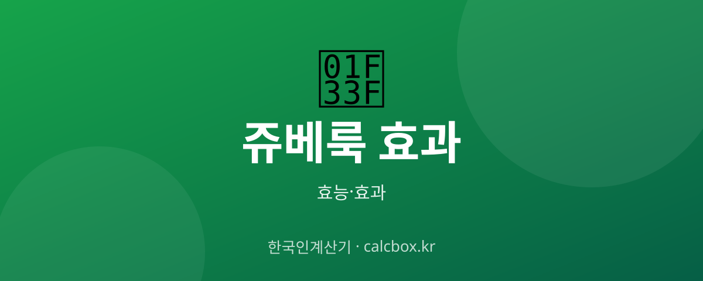

쥬베룩 효과 — PLLA 콜라겐 부스터의 효과와 시술 주기·주의점
콜라겐 부스터로 주목받는 쥬베룩. PLLA 성분이 피부에서 어떻게 작용하는지, 리쥬란과는 어떻게 다른지 정리했습니다.

쥬베룩 개요 — 어떤 것인가요?
쥬베룩은 PLLA/PDLLA(생분해성 폴리머) 성분을 피부에 주입해 자기 콜라겐 생성을 유도하는 콜라겐 부스터 시술입니다. 시간이 지나며 성분은 분해되고 콜라겐이 자리 잡는 원리입니다.
쥬베룩 주요 효능·효과
- 콜라겐 생성 유도 — PLLA가 자기 콜라겐 생성을 자극해 탄력·볼륨 개선을 기대합니다.
- 피부결·탄력 — 결 개선과 탄력 회복 목적으로 활용됩니다.
- 자연스러운 변화 — 콜라겐이 서서히 차올라 자연스러운 개선을 목표로 합니다.
섭취·사용 방법과 권장량
보통 3~4주 간격으로 여러 회 나눠 시술합니다. 효과는 콜라겐이 생성되는 수 주~수 개월에 걸쳐 서서히 나타납니다.
주의사항·부작용
주입 후 붓기·멍·미세 결절이 있을 수 있어 시술 후 마사지 등 관리가 필요할 수 있습니다. 반드시 전문의 상담 후 진행하고, 효과·부작용은 개인차가 큽니다.
자주 묻는 질문 (FAQ)
Q. 쥬베룩과 리쥬란은 뭐가 다른가요?
리쥬란은 PDRN으로 피부 재생 환경을, 쥬베룩은 PLLA로 콜라겐 생성을 유도합니다. 목적·성분이 달라 피부 상태에 따라 선택이 갈립니다.
Q. 쥬베룩 효과는 언제 나타나나요?
콜라겐이 생성되는 수 주~수 개월에 걸쳐 서서히 나타납니다. 즉각적이지 않고 여러 회 시술이 필요한 경우가 많습니다.
Q. 쥬베룩 시술 후 관리는?
부위에 따라 시술 후 마사지 등 관리가 권장될 수 있고, 며칠간 강한 자극·사우나·음주는 피하는 것이 좋습니다. 자세한 관리는 시술 의료기관 안내를 따르세요.